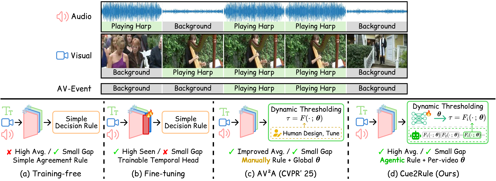

Open-vocabulary audio-visual event localization requires models to temporally localize events and recognize categories that may be unseen during training, exposing a tension between task-specific adaptation and systematic generalization. We recast this problem as policy-aware formulation discovery: instead of fine-tuning pretrained encoders, we keep audio, visual, and text representations frozen and compose them with an agent-discovered symbolic decision formulation and a video-specific neural policy.
Our method, Cue2Rule, uses a multi-agent loop to search over executable decision formulations, jointly guided by oracle expressiveness and policy learnability. It then trains a lightweight policy network to predict per-video parameters for the selected formulation, replacing globally fixed thresholds with adaptive parameterization. This decomposition separates reusable decision structure from sample-specific adaptation.
On OV-AVEBench, Cue2Rule improves over the best fine-tuning baseline, raising the total average score from 57.8 to 60.2 and unseen-category performance from 55.8 to 59.9, while reducing the seen–unseen gap from 7.1 to 1.2. These results suggest that agent-discovered symbolic structure with neural per-sample instantiation provides a promising alternative to encoder fine-tuning for open-vocabulary multimodal perception.
Open-vocabulary audio-visual event localization asks the model to label each segment of a video only when an event is supported by both what is heard and what is seen, including categories never seen during training. The figure below sketches the design space and where existing approaches sit:

Top: a segment is labeled with the event class only when audio and visual evidence agree (here, Playing Harp); otherwise it is background.
Bottom — four ways to build the decision layer:
Instead of fine-tuning the multimodal encoders, Cue2Rule keeps audio, visual, and text features frozen and concentrates on the decision layer that turns those features into per-segment event predictions. We split that decision layer into two parts:
This split lets us ask two complementary questions independently: could the rule express the right behavior under ideal per-video parameters (its expressive ceiling), and can a learned policy actually reach those parameters from frozen video features (its learnability). Cue2Rule is judged good only when both answers are yes.
We discover the rule and train its policy through an offline loop of four cooperating LLM agents. The Plan Agent looks at reports from previous rounds and decides what to try next: revise the rule, retune ranges, request a specific ablation, or ask for a focused diagnostic. The Design Agent writes a candidate rule that satisfies a small set of structural constraints (kept simple enough to stay interpretable and stable to train) and a parameter range for each knob. The Oracle Agent measures how high the rule could score if every video were given its best parameters, plus how much each parameter actually contributes. The Policy Agent trains the policy network on the new rule and reports how the learned, per-video parameters behave in practice and where they fall short of the oracle.
All four agents write a short report into a shared memory at the end of each iteration, and the Plan Agent uses that memory to steer the next round. Importantly, the agents are only used during this offline search. At test time there are no LLM calls at all: a video goes through the frozen encoders, the policy network produces parameters for that video, and the rule turns similarity cues into predictions.
Performance comparison on OV-AVEBench. Baseline scores follow the OV-AVEL benchmark; AV2A is adapted from its official implementation to ImageBind features and tuned on the OV-AVEBench validation set. Cue2Rule attains the best unseen-category and total averages, while shrinking the seen–unseen gap from 7.1 (best fine-tuning baseline) to 1.2.
| Method | Seen | Unseen | Total | |||||||||
|---|---|---|---|---|---|---|---|---|---|---|---|---|
| Acc. | Seg. | Eve. | Avg. | Acc. | Seg. | Eve. | Avg. | Acc. | Seg. | Eve. | Avg. | |
| Training-free | ||||||||||||
| Video-LLaMA2 | 50.1 | 40.6 | 32.0 | 40.9 | 48.5 | 38.5 | 29.0 | 38.6 | 48.9 | 39.1 | 29.8 | 39.3 |
| CLIP & CLAP | 51.4 | 41.4 | 31.9 | 41.6 | 51.6 | 42.2 | 31.6 | 41.8 | 51.5 | 41.9 | 31.7 | 41.7 |
| ImageBind-TF | 57.5 | 45.0 | 34.0 | 45.5 | 59.8 | 47.3 | 34.0 | 47.0 | 59.2 | 46.7 | 34.0 | 46.6 |
| Fine-tuning | ||||||||||||
| CMRA | 65.2 | 58.8 | 54.3 | 59.4 | 36.0 | 31.0 | 26.3 | 31.1 | 44.3 | 38.9 | 34.3 | 39.2 |
| AVE | 76.6 | 63.6 | 56.0 | 65.4 | 44.6 | 33.2 | 24.0 | 34.0 | 53.8 | 41.9 | 33.2 | 42.9 |
| PSP | 75.4 | 66.8 | 61.0 | 67.7 | 33.7 | 28.2 | 24.2 | 28.7 | 45.6 | 39.3 | 34.7 | 39.9 |
| MM-Pyramid | 76.5 | 66.9 | 62.3 | 68.6 | 36.8 | 29.0 | 23.8 | 29.9 | 48.4 | 40.2 | 35.2 | 41.2 |
| ImageBind-FT | 72.5 | 61.8 | 54.5 | 62.9 | 64.9 | 55.0 | 47.5 | 55.8 | 67.1 | 56.9 | 49.5 | 57.8 |
| Dynamic Thresholding | ||||||||||||
| AV2A-Manual | 53.0 | 46.1 | 42.7 | 47.3 | 59.5 | 51.1 | 46.4 | 52.3 | 57.6 | 49.7 | 45.4 | 50.9 |
| AV2A-Grid | 59.9 | 53.1 | 49.1 | 54.1 | 63.4 | 55.6 | 50.9 | 56.6 | 62.4 | 54.9 | 50.4 | 55.9 |
| Cue2Rule (ours) | 68.6 | 60.1 | 54.6 | 61.1 | 68.5 | 59.1 | 52.0 | 59.9 | 68.6 | 59.4 | 52.7 | 60.2 |